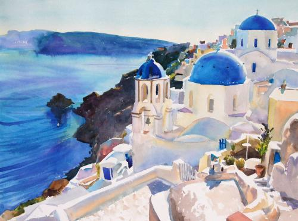
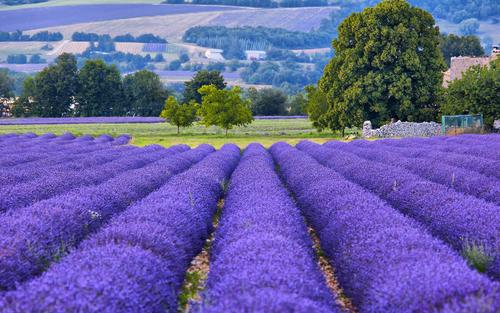
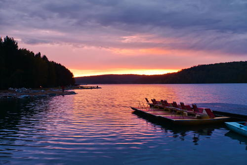
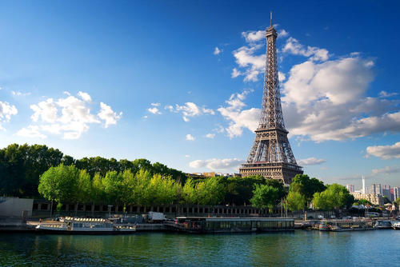
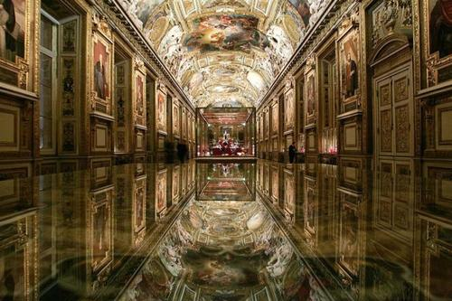

欧洲风情十日游 |
|
|  |
Day01-Day02 爱琴海是希腊半岛东部的 一个蓝色系海洋，南抵克里特岛，属地中海的一部分。爱琴海名称起源有各种解释，其中一个可能的词源 是Αιγ- ，意思是波浪，因此Αιγαίο Πέλαγος意思是波浪起伏的海。它不仅是西方欧洲文明的摇篮， 对世界各国旅客来说，更是浪漫情调旅程的象征。 |
| Day03-Day04 普罗旺斯是世界闻名的 薰衣草故乡，并出产优质葡萄酒。普罗旺斯还是欧洲的“骑士之城”，是中世纪重要文学体裁骑士抒情诗的发源地。 普罗旺斯境内有艾克斯、马赛等名城，还有阿尔勒、葛德、阿维尼翁（又译亚维农）、尼姆等市镇组成。 此地区物产丰饶、阳光明媚、风景优美，从古希腊、古罗马时代起就吸引着无数游人，至今依然是旅游胜地。 |
 |
|  | Day05-Day06 贝加尔湖是亚欧大陆最大的 淡水湖，也是世界上最深的蓄水量最大的湖。它于1996年被列入世界遗产名录。它位于俄罗斯东西伯利亚南部。 “贝加尔湖”，中国古代称“北海”，曾是中国古代北方民族主要的活动地区，汉代苏武牧羊即在此地。 “贝加尔”一词源于布里亚特语，意为“天然之海”。 |
| Day07-Day08 埃菲尔铁塔矗立在塞纳河 南岸法国巴黎的战神广场，于1889年建成，是当时世界上最高的建筑物。埃菲尔铁塔是世界著名建筑、 法国文化象征之一、巴黎城市地标之一、巴黎最高建筑物。被法国人爱称为“铁娘子” 。 |
 |
|  | Day09-Day10 卢浮宫位于法国巴黎市中心 的塞纳河北岸，位居世界四大博物馆之首。始建于1204年，原是法国的王宫，居住过50位法国国王和王后， 是法国文艺复兴时期最珍贵的建筑物之一，以收藏丰富的古典绘画和雕刻而闻名于世。 卢浮宫已成为世界著名的艺术殿堂，最大的艺术宝库之一，是举世瞩目的万宝之宫。 |